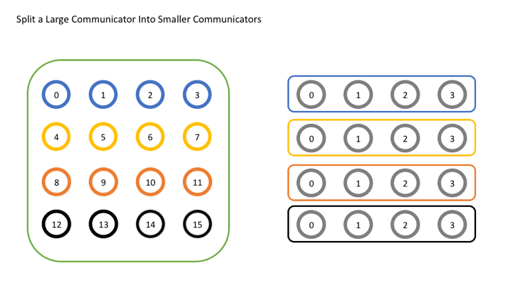

Коллективные операции в MPI (Message Passing Interface) — это методы, которые позволяют всем процессам внутри одного коммуникатора совместно участвовать в передаче данных. Они значительно упрощают программирование, поскольку обеспечивают синхронизацию и взаимодействие между процессами.
Основные типы коллективных операций:
- Broadcast (MPI_Bcast): Рассылка данных от одного процесса (корня) ко всем другим процессам в коммуникаторе.
- Gather (MPI_Gather, MPI_Allgather): Сбор данных от всех процессов в один процесс (или во все процессы).
- Scatter (MPI_Scatter): Разделение данных от одного процесса на части, которые отправляются всем процессам.
- Reduction (MPI_Reduce, MPI_Allreduce): Применение операции (например, сумма или минимум) к данным всех процессов с возвращением результата.
- Barrier (MPI_Barrier): Синхронизация всех процессов, чтобы они ждали завершения других перед продолжением.
Создание новых коммуникаторов:
Иногда программы требуют создания новых групп процессов для решения подзадач. MPI предоставляет механизмы для этого через:
- MPI_Comm_split: Разделяет существующий коммуникатор на несколько меньших на основе заданных критериев.
- MPI_Comm_create: Создает новый коммуникатор из подгруппы процессов существующего.
Создание новых коммуникаторов полезно, когда необходимо выделить процессы для выполнения отдельных задач с минимальным взаимодействием между группами.
 Назад на главную